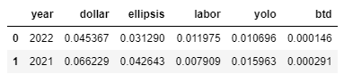
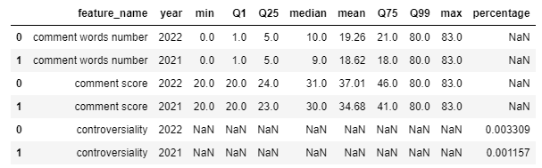
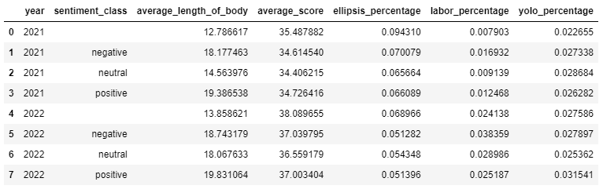

In the volatile stock market, it seems natural that big investment groups would overwhelm the individual investors. However, during the early 2021, the short squezzing of GameStop stock represented a counterattack from the individuals; as their investments led the GME's originally-crumbling price to skyrocket, the short sellers at Wall Street had to admit their failure indicated by their big loss. Then, as the origin of GameStop short squeeze event, the WallStreetBets subreddit represents a group of aggressive individual investors and serves as a good target to analyze. Throughout our exploration of HIGH-SCORE comments in this subredddit, one of our biggest findings is that encouragement on each other serves as the main theme, as users share their opinions regarding the market along with their usually-not-so-cheering personal stories & advice on the stock market, whose popularity reached its climax when the market hitted its bottom. Here in the bottom-left and bottom-right of Figure 1 we could observe that WallStreetBets users make the most and the longest comments during the days when the overall SP500 and Dow Jones index locates itself at the lowest levels, while the amount and length of comments seem to have a negative relationship with the stock index level. Also, the overall sentiment of those comments are generally positive, possibly indicating that people tend to express their agreement/sympathy by giving upvotes to those long yet practical experiences.
Also, there's another crucial finding in our exploration: although WallStreetBets users are still maintaining such an encouraging comment pattern and collectively react to big shocks of the stock market, their overall participation of the channel had a plummet since the early 2021, while the stock market didn't respond to the fading of these aggressive individual investors who are always the first ones to enter and to exit the stock market at the early shocks. Here the figure 2 describes the channel popularity along with the stock index levels, and we could see that the number of comments posted reached its peak at Jan 2021 along with the plummeting stock index(when GME short squezze happened), then dropping in an exponential pattern to the steady-low level after April 2021, only rebounding a bit at August 2022 when the stock market seemed to reach another small peak; however, as the index went down again, this short-lived vitality in the Subreddit came to its end, only reaching 1/7 of the highest peak level at Feb 2021. From here we could also see that as individual investors, the WallStreetBets users participate the most when the stock market illustrates a sign of rebounding from the bottom, and their activities usually fade away when the plummeting stock market does not respond to them with a second chance. Also, the plummet of comments after Feb 2021 corresponds to the time when news waves of COVID-19 (delta and later omicron) came into existence, possibly worsening financial conditions for individual investors and contributing to the overall fading popularity of the subreddit.
Starting from one of our business goals(potential correlation between US stock indices and subreddit contents), our first step was an exploratory data analysis on the WallStreetBets subreddit data merged with the external stock indices data, visualizing the stock index levels against the overall popularity of the subreddit represented by number of comments posted, aggregated day by day:
Figure 1: daily comments vs. stock index (Interactive, select a zone to zoom in, double-click to return)
This first scatter plot depicts the changes in the number of daily comments posted in the subreddit “wallstreetbets” correspond to the changes in the stock market index from January, 2021 to August, 2022. The stock market index used in this line chart was collected from three different source which are sp500, Nasdap, and Dow Jones. Moreover, due to the impact of the “GME” event, the number of daily comments has become extremely higher than usual. Therefore, our group forms another scatter plot which only includes the dates from April, 2021 to August, 2022 on the right. Both of the graphs are interactive plots. Thus, audience is able to select their own interested time interval and check the changes of daily comments in that interval. Moreover, the number of daily comments has an increased pattern around January, 2021, July, 2021 and August, 2022. However, unlike daily comments, during January, 2021, all three stock index indicates a decreasing pattern in the stock market. While for July, 2021 and August, 2022, all three stock index indicates an increasing pattern in the stock market similar to the daily comments. Also, the two peaks of subreddit popularity in June 2021 and August 2022 all faded away after a following sharp drop in the stock prices(especially for SP500 and Dow Jones), possibly indicating that the individual investors represented by this channel could be the first victim of the market shocks due to high volatility.
As the stock price pattern varies greatly from 2021's steady increment to 2022's drop followed by oscillation, we decided to anchor our further analysis on comparisons between 2021 and 2022 data, and our very first topic was based on several popular terms in the WallStreetBets subreddit:
1. The dollar sign($): The existence of this character usually refers a specific amount of money, thus possibly indicating investing-related behaviors.
2. The ellipsis(...): The existence of ellipsis usually refers to a distressed or speechless mood of the comment poster, thus possibly indicating unsatisfactory investments or experiences.
3. YOLO(You can Only Live Once): This term generalizes the reckless behavior of investing all the money into a specific stock.
4. Labor-related topics(labor, employment, wage, etc.): As another major source of earning money, the topic of labor might suggests the opposite of investing in stocks, thus could be used to track the popularity of investing behaviors indirectly.
5. btd(Buy The Dip): This term generalizes the investment behaviors of buying stocks whose prices are dropping, another risky strategy but sometimes useful. Thus, this could be used as another indicator of investment popularity in the channel.

From this chart we could observe that the 5 topics make up only a small part of all comments, but their ratio expresses interesting comparison between 2021 and 2022. For 2022, while the ratio of labor-related comments increases by nearly 50%, the ratio of dollar sign, ellipsis, YOLO and btd all drop greatly ranging from -30% to -50%; as the dropping terms all relate to stock-investing behaviors, this possibly indicates that users in the WallStreetBets subreddit have been investing less often in 2022 and focusing more on real jobs for their source of income. Also, connecting such pattern to the stock price, it seems reasonable that the overall-dropping stock price levels could be a factor for such change.
We also draws the previous scatter plot with the comments having dollar sign, and the resulting pattern is similar to that we got earlier:
Figure 2: daily comment length vs. stock index (Interactive, select a zone to zoom in, double-click to return)
To further drill into the decreased popularity in investments, we decided to filter the reddit data to get the comments with high score, since these comment might better illustrate the common thoughts and investment suggestions from the subreddit users. Here is the quantile of comments statistics for those high-score comments:

In this table we could observe that high-score comments in 2021 and 2022 are having a similar distribution in text length and score, but the high-score comments in 2022 are having a way larger ratio of controversiality, indicating that users might disagree more with each other's ideas regarding the stock market and other topics in this channel.
Further, we want to explore the high-score comments in another aspect of text length:
Figure 3: Distribution of comment length
This plot discover the text length of the comments in the subreddit “wallstreetbets”. The plot above focused on the text length smaller than 400 words. Based on the distribution in first plot, we can conclude most of the comments has a text length between 0-15 words. And the text length above 100 words has a very low frequency. To further explore the distribution, our group listed the text length to smaller than 100 words and forms the second distribution plot. In the second distribution plot, we can conclude that the distribution has a skewed to right pattern. And most of the comments has a text length around 15 words.
Besides text length, another field of interest we would like to explore is word frequency, and we decided to analyze in 2 ways: most common words and most common words in tf-idf manner.
|
|
|
Figure 4: Wordmap for popular words in 2021 and 2022 (Interactive, select a zone to zoom in, double-click to return)
This pair of plots depicts the word cloud for most common words in 2021 and the most common words in 2022. The plots are also interactive, as audience could drag to select an area in order to zoom in for further inspection. Based on comparison, the most popular word in both year 2021 and 2022 is “buy”. While the other common words are highly similar to each other. As those common words are mostly investment-related actions and nouns, we can infer that the investment behaviors do not have a significant changes between year 2021 and year 2022.
However, when the tf-idf manner is applied, would we still get the same pattern? Let us have a look:
|
|
|
Figure 5: Wordmap for popular tf-idf words in 2021 and 2022 (Interactive, select a zone to zoom in, double-click to return)
These plots depict the word cloud for most important words in 2021 and the most important words in 2022 in a tf-idf manner. Based on comparison, the most important word in both year 2021 and 2022 is “share”, but there are several interesting common terms in 2021 that disappears in the 2022 wordcloud: "GME", "profit", "money", "life", etc. The frenzies of GameStop short squezzing inevitably faded away, and based on the word clouds we can infer that people in year 2022 is less interested in investing, at least less interesting in investing until their last bit of coin.
Until this stage, our exploration was limited to the existing data its raw contents. As the next crucial step, we built up a sentiment model and applied it on the high-score comment subset to get the potential sentiments of those comments. Upon those sentiments, the very first thing was to connect them to the daily stock price level and subreddit popularity to see if there is any interesting relationships:
Figure 6: Sentiment bubbleplot of text length (Interactive, select a zone to zoom in/filter, click a bar to filter)
Figure 7: Sentiment bubbleplot of text score (Interactive, select a zone to zoom in/filter, click a bar to filter)
The above 3x2 bubble plots illustrate the daily stock price level versus average comment score and average text length, and the 3 figures in a row indicates 3 different stock indices. Those plots are highly interactive and the instructions are below:
1. Each bubble on the plot represents a day within 2021-01-01 ~ 2022-08-31, and the size of bubble indicates the number of comments made in that day. You can use tooltip to get detailed information about each bubble.
2. For the first row of each figure, you can zoom in and make subset of data in each plot by draging and selecting a certain region or scrolling the mouse wheel
3. For the second row of each figure, you can apply a sentiment filter by selecting certain region or clicking corresponding bar to filter sentiment.
Here are our findings on the plots:
1. Regarding the comment popularity, we found that most of the high-score comments were posted when SP500 and Dow Jones indices were at their lowest levels, and the text length expresses a strong negative pattern against stock indices, indicating that people tended to make long posts when the stock market is unsatisfactory. This, like what we suggested in the non-technical section, is likely to indicate the existence of a popular comment theme as alleviation and suggestions on further investments, since the whole subreddit is an investment channel and users usually share their thoughts, stock news and investment suggestions.
2. Regarding the sentiments, we found that the overall sentiment for the high-score comments are generally positive, and the ratio of positive comments keeps dominant for all the days regardless of the stock index levels, as the sentiment bar chart being similar when we select any of the days to inspect. This finding further validates our hypothesis above, as warm suggestions and alleviations usually contain more positive-related words and are more likely to be classified as with a positive sentiment. Of course the previous filter on the score might have an impact on the positive-dominated pattern, but a high score usually correlates with high quality comment, and the below chart further reveals the existence of a consistent atmosphere:

This chart summarizes the distribution of topics discussed earlier(btd was taken out with a too-small ratio) based on sentiment between 2021 and 2022. We could observe that while high-score comments in 2022 receive a larger average score and similar average text length, the investment-related topics(ellipsis and yolo) either keeps the original level or drops within all the sentiment categories, and the labor-related comments come to a higher level of ratio for all sentiment categories. This matches our previous ideas that the mainstream idea of subreddit in 2022 has been suggesting less in the investment topics and more in the labor topics.
Throughout our explorations, we have got a clearer observation of what we have observed between the stock price levels and the subreddit contents:
1. As the origination of GME short squezzing event, the WallStreetBets subreddit represents individual investors whose activities seems to experience a weekly loop along with the stock market and experiences big popularity when big events happen, then retreating to normal level after the stock market experienced a big drop to leave those individuals out.
2. Among the high-quality comments, there potentially exists an overall-positive pattern where users respond to investment experiences, share stock news and make suggestions for further investment. Besides, such pattern seems to be more popular during the bear market times.
3. Since 2022, potentially connecting to the unsecuring stock market, the labor market has been more and more popular comparing to the retreating of investment-related behaviors implied by the keywords and topic frequencies, but the popular terms like YOLO would still possess and be popular in this channel of reckless yet free individual investors.